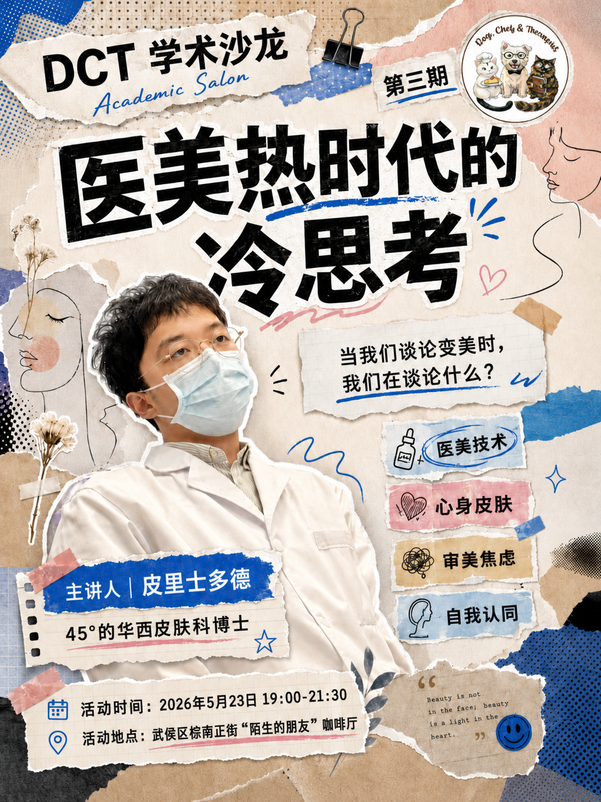

2026 年的春天，三个非典型的精神科 PhD 坐在同一个客厅里——发现彼此都在等待一种久违的状态：愿意慢下来，认真聊一些"不那么有用但很重要"的事。
我们把这种状态称作天时地利人和——天时是这一年都在心里酝酿的某种倦怠与好奇，地利是恰好可以容纳几个人坐下来的客厅，人和是这群愿意暴露自己、也愿意倾听别人的朋友。
沙龙的发起人是三个共同读博、各自带着第二、第三身份的精神科医生：
它既是个名字，也是种态度——不必非得"有用"才值得讨论，但讨论时要保留科学训练给我们的那份认真。
我们刻意没有选讲堂、共享空间——而是客厅。它在物理上离生活最近，也在心理上离表演最远。
没有 PPT 也行、不正襟危坐也行、说错话也行。我们希望氛围像朋友间的夜谈：有人讲，有人听，有人随时插话，有人沉默地吃一块甜品。
每期一位主讲人 · 一个 TA 真心热爱或长期琢磨的话题 · 40 分钟左右分享 · 之后是自由讨论。欢迎打断、追问、不同意——只要友善。
没有学科限制 · 没有职称门槛 · 不查论文影响因子。
我们筛选的标准只有两条：
每期都精挑细选，多学科背景优先，尽量不要让客厅变成同一个领域的回音室。

DCT 第三期，我们邀请到 皮里士多德——一位在华西临床与实验室之间往返的皮肤科医生，和我们一起重新理解"医美热"。
医美当然关乎技术。光、电、注射......每一种手段背后都有真实的医学逻辑、适应证与风险边界——它能改变什么，又不能承担什么。
医美也不只是技术。技术能改变的，是脸上可量化的部分；而"变美"的感受，从来不是单靠技术兑现的承诺。它同时牵动着审美标准、身体感受、情绪压力、消费选择，以及一个更隐秘的问题：当我们想要改变自己的脸和身体时，我们真正想改变的是什么？
想变美并不浅薄。但在改变之前，也许可以先问：我想实现的，是谁的想象？这一次，我们不急着赞成，也不急着反对——我们想把"变美"这件事放回更大的语境里：医学如何参与审美，技术如何改变身体经验，而"变得更好"又是如何被想象、被定义、被追求的。